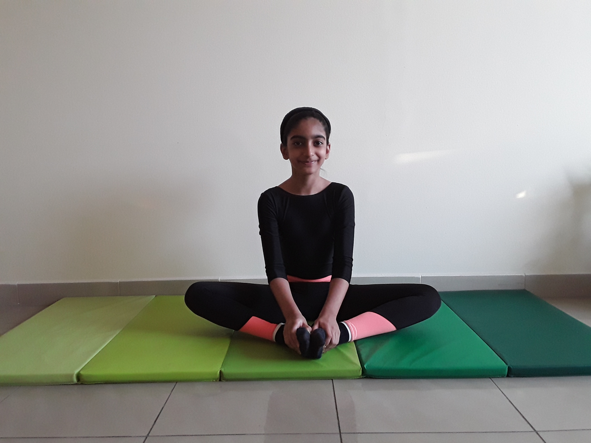

BUTTERFLY POSE

Steps to perform Butterfly Pose
- From a seated position, bring the soles of your feet together, close to your pelvis, allowing your knees to fall out to the sides.
-
Ground your sitting bones and lengthen your spine
-
Hold onto the outsides of your feet and press the soles of your feet towards each other.
-
If your body allows it, fold forward from the hips, keeping your spine long and your collar bones spread
-
Stay for 5 to 10 breathes.
-
To come out of the pose, sit up straight again, lift your knees and straighten your legs